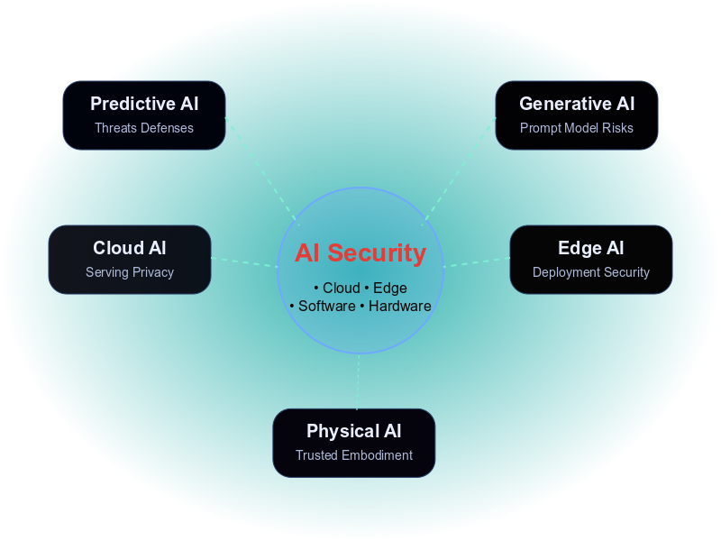
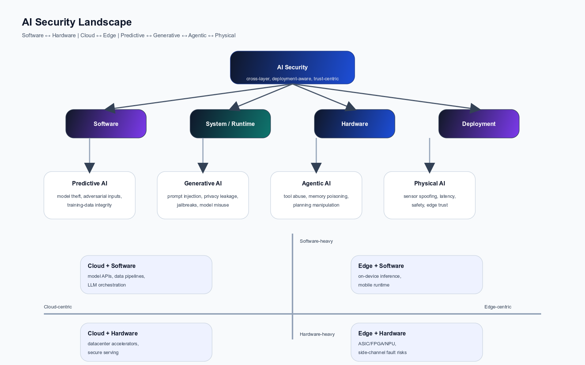
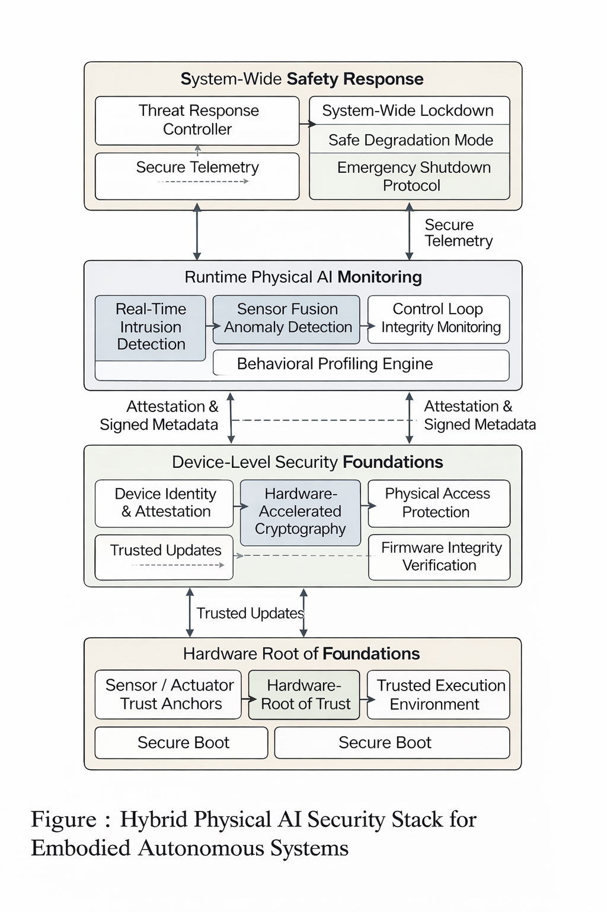
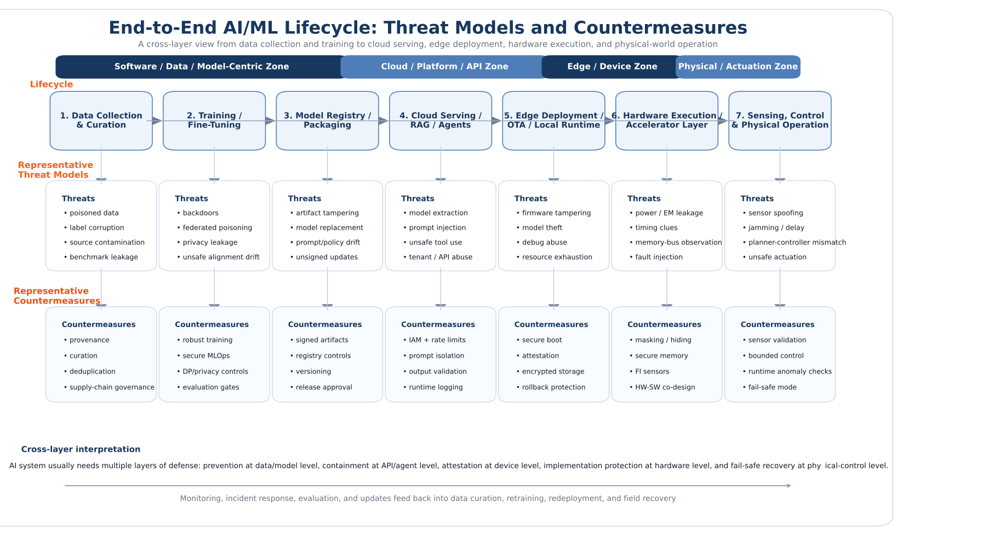

Building a technical map of trustworthy AI security from models and accelerators to agents and real-world systems
I am Brojogopal Sapui. This website is designed as a research-driven technical portal for understanding AI security across software, hardware, cloud, edge, generative, agentic, predictive, and physical AI. It combines structured explanations, visual intuition, ongoing research notes, and cross-layer perspectives.

Real security changes when AI meets hardware, sensors, latency, and physical access.
Modern trust depends on the full path from training and serving to deployment and actuation.
Why this website is different
This site is not only a personal homepage. It is a structured technical portal that connects AI model security, hardware implementation risk, deployment realism, and emerging system-level trust challenges.
Understand the field clearly
Each topic is broken into intuitive explanations, threat models, practical attack surfaces, and research directions.
See the cross-layer connection
The website links model-level issues with cloud serving, edge deployment, accelerator implementation, and physical operation.
Track evolving research
Ongoing research-watch notes highlight what is changing now in agentic AI, edge AI, hardware trust, and physical intelligence.
The AI security landscape at a glance
A high-level technical map of modern AI security across software threats, hardware risks, deployment realities, and future cross-layer countermeasures.

This diagram is intended to help readers quickly see that AI security is no longer confined to adversarial examples or model privacy alone. It now includes implementation leakage, accelerator vulnerabilities, autonomy risks, physical-world coupling, and system integration challenges.
Open Full Research StructureThree security directions reshaping the field
These are among the most important shifts in AI security today: generative interaction, edge implementation realism, and physical-world intelligence.

Prompt-layer security is now a system security problem
Generative AI security is not only about harmful output. It includes prompt injection, jailbreaks, misuse, tool abuse, alignment failure, model exposure, and containment across real applications.

At the edge, hardware details become part of security
Physical access, leakage, timing, firmware trust, updates, and accelerator behavior change the attacker model.

Trust must cover sensing, computation, timing, and action together
Embodied AI connects cyber decisions to real-world behavior, so security and safety become inseparable.
Browse the security categories covered here
These pages are written to be readable for students and collaborators while still being technical enough for researchers and engineers.
Software Security
Adversarial manipulation, data poisoning, privacy leakage, model extraction, misuse, and secure training.
02Hardware Security
Side-channel leakage, fault injection, accelerator vulnerabilities, implementation gaps, and hardware-aware defense.
03Cloud AI Security
Shared infrastructure, API exposure, access control, data handling, and secure AI serving pipelines.
04Edge AI Security
Device realism, constrained compute, firmware trust, secure updates, accelerator exposure, and physical access.
05Agentic AI Security
Tool use, memory, autonomy, permissions, orchestration, and containment of long-horizon actions.
06Physical AI
Security of embodied systems where perception, timing, decision-making, communication, and actuation interact directly.
Cross-layer security with a hardware-aware research lens
My work sits at the intersection of AI security, hardware security, edge intelligence, and trustworthy deployment. A central idea throughout this website is that real security cannot stop at algorithmic robustness alone. It must also account for implementation, accelerators, physical access, timing behavior, system integration, and deployment conditions.
- Security across software, hardware, and system layers
- Side-channel and fault-injection views for edge AI
- Trust, resilience, and countermeasures for physical AI
- Structured synthesis of challenges, gaps, and future directions
Highlighted ongoing directions
Threats and countermeasures across the AI lifecycle
Security changes across the pipeline: from data and training to serving, deployment, hardware execution, and real-world interaction.

Use this as a real public-facing research portal
Add your official links, selected publications, diagrams, and short technical updates so the website grows as a living research platform rather than a static profile page.